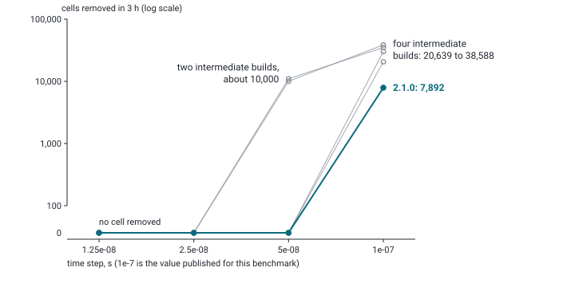
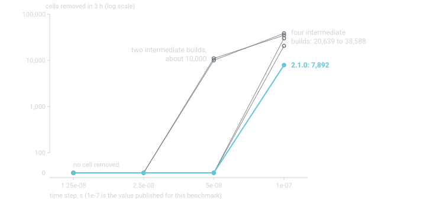

Stable time step#
The growth benchmark (parameters_benchmarck.xml from the v1.0 tag, contact model 1) is
unstable at its published time step, 1e-7 s, in every build. With 2.1.0 it ran clean at 2.5e-8 s
in three runs of 48 hours, ending at 142,314 to 148,914 cells. The other tissues (the vesicle
sweep, the mono- and multilayer vesicles, the tube and the analytic cases) ran clean in 2.1.0 at
their shipped step of 1e-7 s, with the two exceptions listed on Which cases complete.
All runs on 8-core machines (GCP c2-standard-16, 8 threads), November 2026 (Method).
Growth benchmark, by build and time step#
Outcome and peak cell count. Runs at 5e-8 s and 1.25e-8 s, and the first run at 2.5e-8 s,
were 3-hour runs; the others ran to 150,000 cells or 48 hours.
Time step, s |
1.0 |
1.0 with two crash fixes |
2.0 |
2.1.0 |
|---|---|---|---|---|
|
stops, 128 cells |
stops, 286 cells |
crashes, 134 cells |
removes cells, 150,733 cells |
|
stops, 163 cells |
stops, 1,631 cells |
crashes, 216 cells |
clean, 33,997 cells in 3 h |
|
stops, 128 cells |
stops, 22,753 to 42,393 cells |
crashes, 64 cells |
clean, 142,674 to 149,225 cells in 48 h |
|
stops, 170 cells |
clean, 6,946 cells in 3 h |
crashes, 128 cells |
clean, 12,417 cells in 3 h |
Largest time step at which every run of a build was clean:
Build |
Largest stable step |
|---|---|
1.0 |
none (stops at every step) |
1.0 with two crash fixes |
|
2.0 |
none (crashes at every step) |
Intermediate builds |
|
2.1.0 |
|
The 5e-8 s entries rest on one 3-hour run per build. Two intermediate builds that run identical
growth code split at 5e-8 s (one clean, one losing its tissue), so a single run at that step is
close to the edge; 2.5e-8 s is the largest step with clean replicates.


Cells removed as unstable in a 3-hour growth run, by time step, for 2.1.0 and the four
intermediate builds. Below 5e-8 s nothing is removed; at the published 1e-7 s every build
removes thousands of cells in 3 hours. 1.0 and 2.0 are not shown: they stop or crash before
removing a cell.#


Cells removed as unstable in a 3-hour growth run, by time step, for 2.1.0 and the four
intermediate builds. Below 5e-8 s nothing is removed; at the published 1e-7 s every build
removes thousands of cells in 3 hours. 1.0 and 2.0 are not shown: they stop or crash before
removing a cell.#
What happens at 1e-7 s#
The full-length run of 2.1.0 at the published step ended at 150,194 cells (peak 150,733) in
21.7 h, against
37.7 h for 125,000 cells at 2.5e-8 s. It did so by removing 93,310 cells as numerically unstable:
the first removal at about 4,800 cells (iteration 2,146);
removals in large numbers from about 13,800 cells;
249,552 refused divisions;
three blow-ups in which two to five nodes became non-finite.
The run exits normally, so its cell count looks like success. It is not a clean solution of the model. One intermediate build also reached 150,000 cells at this step, after removing 307,073 cells; two others hung in the Delaunay step of the cell divider, which has no iteration limit.
The other tissues#
The vesicle sweep, the mono- and multilayer vesicles (whose cells grow but do not divide), the
tube and the analytic cases ship with a time step of 1e-7 s. 2.1.0 completes them at that step
except the shipped long monolayer file and the two-cell contact file with the smaller minimum edge
length. 2.0 and three of the four intermediate builds also fail the shipped two-cell contact file
(Which cases complete). The vesicle at ε = 2.0, the
multilayer vesicle, the tube and three analytic files also ran once with a second parameter set at
5e-8 s, and completed in 2.1.0. No step larger than 1e-7 s was tested for these tissues.
Recognising an unstable step#
An unstable step does not stop a 2.1.0 run. Look for these signs in your own runs:
Lines starting
Removing numerically unstable cellon standard error. The standard error log is the complete record; the columnunstable_cells_removedofperformance_diagnostics.csvcounts removals per 100 iterations but omits the last window (Safeguards).Removals that start after a few thousand cells and then accelerate.
Refused divisions that grow faster than the tissue.
A final cell count far below the peak, with exit status 0.
A run with any removal is not a faithful solution of the model at that step.
Recommendation#
For the growth benchmark file, the recommended time step is
2.5e-8s, not the published1e-7s. It was clean in three of three 48-hour runs with 2.1.0, which ended at 142,314 to 148,914 cells (peaks 142,674 to 149,225), on the hardware of Method; that is a measurement, not a guarantee for other machines or longer runs. It multiplies the iteration count by four.For a new configuration, run short runs at the intended step and at half of it. Keep the largest step that removes no cell over the size range you need; check removals again when the tissue grows past the size you tested, because at
1e-7s the first removal came only at about 4,800 cells.Report the number of removed cells with every result (Time integration).